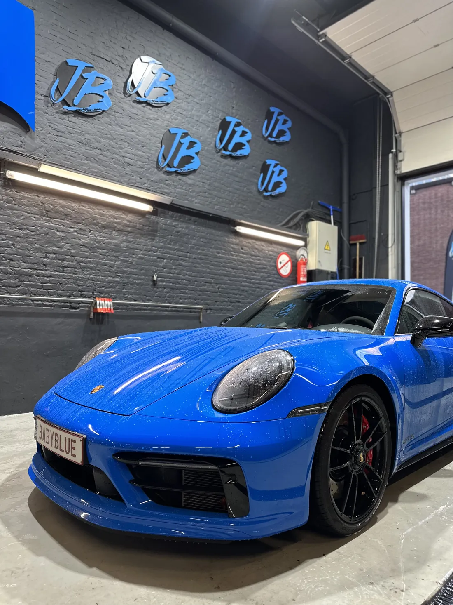
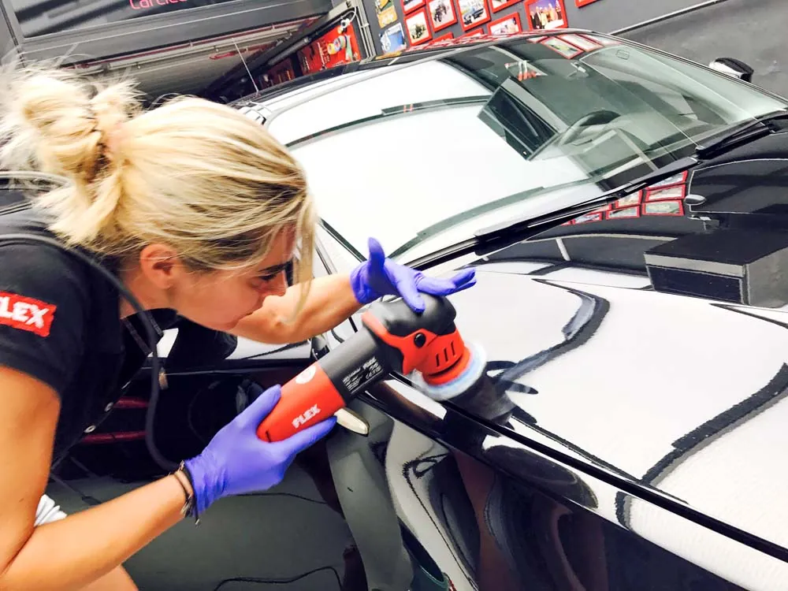
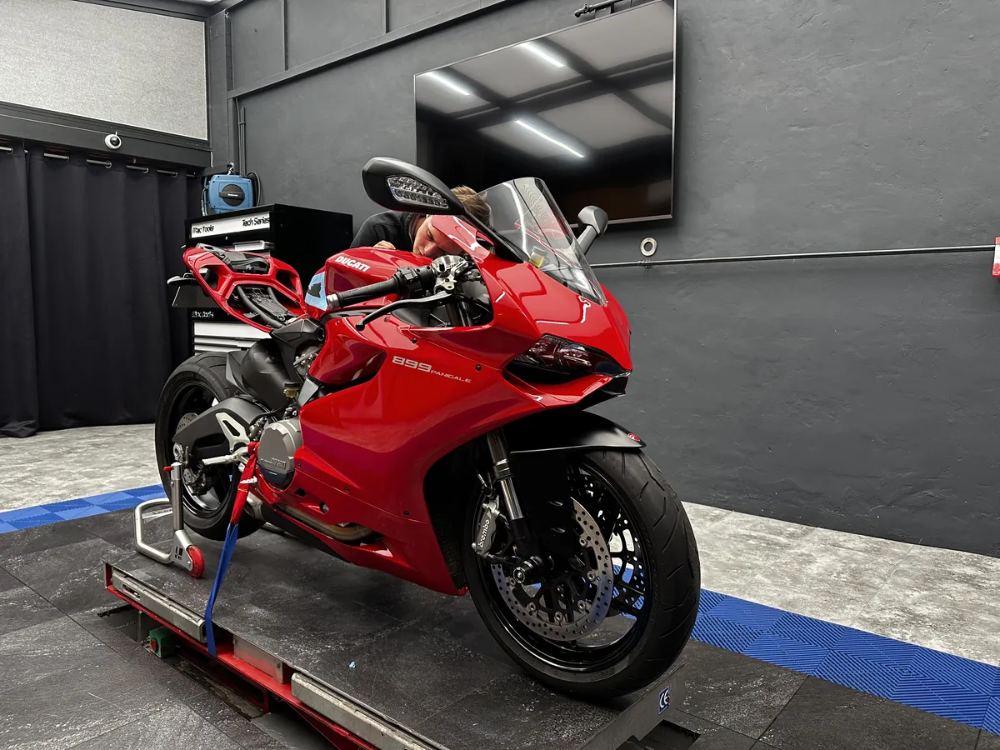

JBFamiliezaak in car detailing, sinds 1982
5,0 op Google uit 45 reviews
Elke wagen behandeld alsof hij van ons is.
Luxe handwas, polieren, keramische coating en lederherstel. Al meer dan veertig jaar, in onze eigen detailingstudio.
5,0 op Google uit 45 reviews

5,0
45 reviews op Google
 met de hand, tot het blinkt
met de hand, tot het blinktUit de studio
Van een zachte handwas tot een spiegelende lak.
Swirls en krassen weg, een interieur dat weer fris ruikt, koplampen die terug helder zijn. Ook motoren en boten krijgen hier hun beurt.

Polieren Interieur & leder
Interieur & leder Koplampen
Koplampen
Motoren Boten
BotenTwijfelt u wat uw wagen nodig heeft? Kom langs, dan kijken we samen.
Plan een bezoek
5,0/5
uit 45 reviews op Google
Een familiezaak, al drie generaties lang.
Wat begon als een carwash, groeide uit tot een studio waar polijsten een ambacht is. Vandaag staat de derde generatie mee aan het roer.
- 1982Francis van den Goor start Carwash Dubois
- 1989De eigen detailingstudio wordt gebouwd
- 1995Justyna Brys neemt het roer over
- VandaagBert van den Goor, derde generatie, staat mee aan het roer

Detailing AcademyWie het vak zelf wil leren, kan hier ook in de leer.
Langskomen
Kom gerust eens binnenkijken.
Bel of stuur een WhatsApp met uw vraag, dan zoeken we samen een moment dat u past.